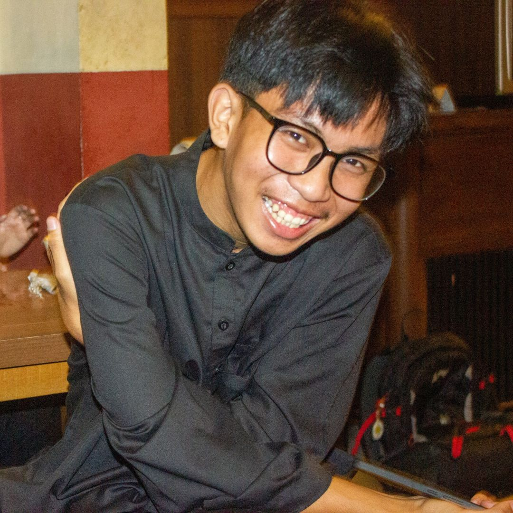

Di tengah ritme kehidupan yang semakin cepat, menjaga hubungan dengan teman dan keluarga menjadi sebuah kebutuhan emosional yang tak ternilai. Kesibukan sering kali membuat kita lupa untuk berhenti sejenak dan menikmati waktu bersama orang-orang terdekat. Padahal, momen-momen sederhana seperti berkumpul di sebuah kafe yang nyaman bisa menjadi obat ampuh untuk melepas penat dan mempererat ikatan yang ada.

Foto Bang Zaki nyengir